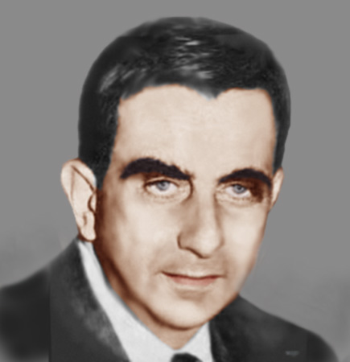
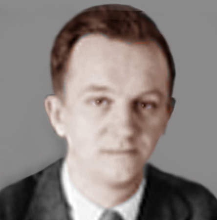
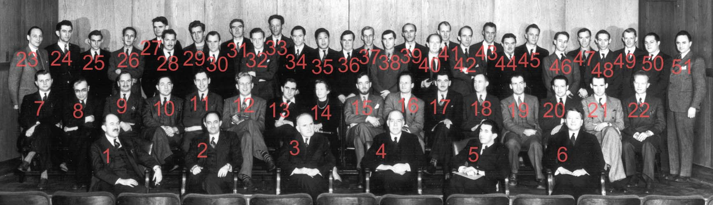
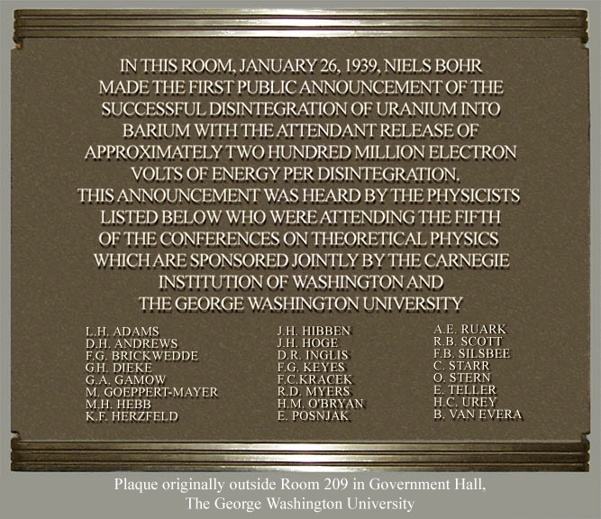
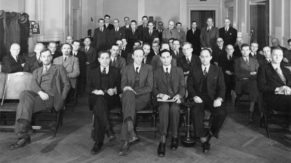
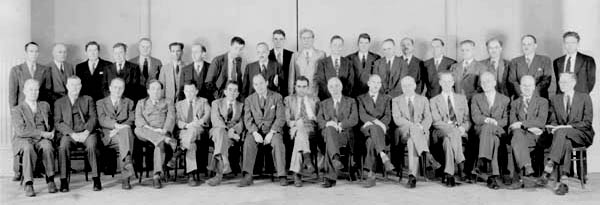
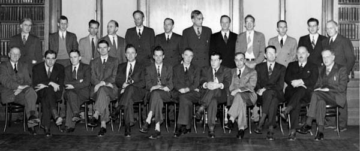

|
The George Washington University |
|
George Gamow |

Edward Teller |

Merle Tuve |
From 1935 to 1947 (excluding the World War II years 1943-1945), Profs. George Gamow and Edward Teller at GW and Dr. Merle Tuve at Carnegie were able to attract a few dozen of the most prominent physicists in the world to GW's campus at a time when new physics was flourishing. During the Washington Conferences on Theoretical Physics, fruitful ideas surfaced in presentations and informal discussions focused on topics like nuclear reactions, stellar processes, low temperature physics and gravitation. These ideas aided in understanding nature and led to many far-reaching applications now part of modern technology.
Humanity has been affected by the technology that grew from the physics of the 1930s and 1940s. Being informal, limited in size and attracting the greatest physicists of the time, the Washington Conferences on Theoretical Physics at GW significantly influenced the present understanding of fundamental physical processes as well as the resulting practical applications that can make life easier - all while laying a wider foundation for future developments.
Washington Conferences on Theoretical Physics
1935: First Washington Conference on Theoretical Physics: Nuclear Physics
Attendees included: G. Gamow, E. Teller, M. Tuve, H. Bethe, P. Dirac, G. Uhlenbeck, J. Bartlett, E. Feenberg, D. Inglis, R. Seeger, J. Fleming, E. Konopinski, O. Stern, G. Beck, ?. Gaertner, R. Ladenburg, L. Szilard, L. Berkner, A. Lande, G. Breit, S. Goudsmit, E. Lawrence, L. Tuckerman, E. Condon, L. Gray, F. Mohler, O. Dahl, L. Hafstad, L. Nordheim, W. Houston, I. Rabi, S. Young
Discussion involved why the magnetic moment of proton differs from electron, theories of gamma radiation and of beta decay.
Gamow's Report on the Theoretical Physics Conference,, APRIL 19, 20, 21, 1935
The first annual conference on theoretical physics, called on April 19, 20, 21, 1935, by George Washington University together with the Carnegie Institution of Washington, was devoted to the discussion of the latest problems of nuclear physics.
The first discussion (afternoon of April 19) was started by Gamow, who called the attention of participants to the Bohr explanation of the non-applicability of Dirac’s theory to a proton, from this point of view, due to the failure of Dirac's theory in the case of a proton one must not only expect its magnetic moment to be different from 1/1840 of Bohr’s magneton but also one may not use the ordinary value of gyromagnetic ratio for the orbital motion of a proton within the nucleus.
In this connection Bethe told about an as yet unpublished theory of Heisenberg and Wiezecker according to which the large value of magnetic momentum of a proton, as observed by Stern, can be explained as due to the virtual disintegration of a free proton into a neutron and a positive electron. The electron existing for a very short time "in status nascendi" contributes to the total magnetism momentum and this makes it as observed about 2.5 times larger than would be expected from Dirac's theory.
The second question raised by Gamow was in connection with the probability of gamma-radiation by radioactive nuclei. Discussing the experimental evidence on this question, Gamow came to the conclusion that the probability of any nuclear radiative transition is given by quadrupole (and not by dipole) formulae. The discussion centered on various attempts to understand why in the case of nuclei the probability of dipole-transitions is reduced to such a large extent. Although one could indicate a number of factors reducing the dipole momentum of the nucleus, the complete answer to this question was not given.
The second meeting (evening of April 19) was begun with a discussion of the laws of force between heavy elementary particles and their bearing on nuclear models. The conclusion was reached that perhaps one should not consider the motion of each nuclear particle in the average field of the others (as done in Heisenberg's theory), in which case the construction of a proper nuclear model should be very difficult. Breit reported on his calculations concerning the effective cross-sections for the processes of artificial nuclear transformations by collision which are in satisfactory agreement with experimental evidence. He also gave the theoretical probability for the radiative capture of protons by carbon-nuclei. This is about ten thousand larger than the experimental evidence obtained by Tuve and Hafstad. According to Breit, this discrepancy may be reduced by better calculations.
Finally Bethe reported about his explanation of the Fermi-effect with slow-neutrons. Due to the very large wave-length of the corresponding de-Broglle wave the probability of capture of a neutron by a nucleus must increase with decreasing velocities.
The third meeting (afternoon of April 20) was started with Beck's discussion concerning modern theories of beta-decay. A very interesting discussion of this question was given by Uhlenbeck who has shown that the shape of continuous beta-spectra can be easily obtained from quite general statistical considerations and energy-partition. The question of the beta-activity of potassium was brought up and the discussion continued in the direction of a possible explanation of the long decay-period observed in this case. At the fourth meeting (evening of April 20) a very stimulating discussion led by Bethe was devoted to the question of high-energy radiations (cosmic-ray particles) and the nature of the non-ionizing links of the cosmic-ray showers. On Sunday afternoon (April 21), after a two-hour discussion of various problems over a most excellent dinner, the members of the conference spent the remainder of the day discussing, in small groups, nuclear problems that had arisen during the conference and inspecting the nuclear-disintegrations apparatus of the Department of Terrestrial Magnetism.
G. Gamow, Professor of Theoretical Physics, George Washington University Washington, D.C., and Dr. J.A. Fleming, Director, Department of Terrestrial Magnetism Washington, D.C., May 2, 1935
1936: Second Washington Conference on Theoretical Physics: Molecular Physics
Attendees included: J. Bartlett, R. Fowler, G. Lewis, H. Sponer, H. Bethe, J. Franck, J. Mayer, I. Rabi, G. Breit, G. Gamow, R. Millikan, H. Taylor, E. Condon, M. Goeppert-Mayer, L. Nordheim, E. Teller, D. Dennison, K. Herzfeld, G. Nordheim, M. Tuve, K. Darrow, H. James, L. Pauling, H. Urey, G. Diecke, E. Kemble, G. Placzek, J. Van Vleck, H. Eyring, I. Langmuir, J. Slater
The topic was Edward Teller's bailiwick. Attendees included Hans Bethe, Harold Urey, Linus Pauling, James Franck, Karl Herzfeld, Gregory Breit, R.H. Fowler, Eugene Wigner, and Maria Goeppert Mayer. Discussions on the nature of chemical bonds, nuclear isotopes and radioactivity.
A group of leading scientists from various American and foreign universities will gather in Washington Monday, Tuesday and Wednesday, April 27-29, [1936] for the second Washington Conference on Theoretical Physics under the joint auspices of the Carnegie Institution of Washington and The George Washington University.
These annual conferences are an outgrowth of the researches in fundamental physics begun some years ago by the Carnegie Institution and the work which is being done at The George Washington University. Dr. M.A. Tuve and Dr. L.R. Hafstad of the Department of Terrestrial Magnetism, and Dr. Gregory Breit, Jr., formerly of the Department and now at Princeton University, head the work in this field at the Carnegie Institution; while at The George Washington University it is in charge of Dr. George Gamow, Professor of Theoretical Physics, and Dr. Edward Teller, Visiting Professor of Theoretical Physics.
Dr. Gamow, formerly of the Institute of Mathematical Physics and the Academy of Sciences at Leningrad, is the pioneer in the theoretical investigation of atomic nuclei and first formulated the modern theory of radio-activity. Dr. Teller is a Hungarian theoretical physicist whose researches, devoted to the theory of molecule-structure and the dynamics of chemical reaction, are of great significance to experimental chemists in the field of physics and chemistry. Both Dr. Gamow and Dr. Teller have worked at the principal European centers with the scientists who are the leading figures of the age, - at Munich with A. Sommerfeld, at Copenhagen with Nils Bohr, at Leipzig with W. Heisenberg, and at Gottingen with Born. Before coming to The George Washington University last fall Dr. Teller spent a year at the University of London working with the great English physico-chemist, Donnan.
Among those who will come to Washington for the conference are: Linus Carl Pauling, California Institute of Technology; Robert S. Mulliken, University of Chicago; Harold Urey, Columbia University; G. Placzek, Institute of Copenhagen, Hans A. Bethe, Cornell University; Hertha Sponer, Duke University; Irving Langmuir, General Electric Company; Hubert Maxwell James, Edwin Crawford Kremble, J.H. VanVleck, and E. Bright Wilson, Jr., Harvard University; James Holley Bartlett, University of Illinois; Donald Hatch Andrews, Gerhard Heinrich Dieke, James Franck, Karl Ferdinand Herzfeld, Maria Goeppert Mayer, Joseph Edward Mayer, Johns Hopkins University; John Clarke Slater and George E. Kimball, Massachusetts Institute of Technology; David Mathias Dennison, University of Michigan; Gregory Breit, Edward Uhler Condon, Henry Eyring, R. H. Fowler, and Hugh Stett Taylor, Princeton University; Lothar Nordheim and Gertrude Nordheim, Purdue University; Eugene Paul Wigner, University of Wisconsin.
Topics to be discussed by the scientists include: 1. Chemical Bond; 2. Reaction; Velocities; 3. Magnetism; 4. Van der Waal’s Forces; 5. Molecular Vibrations; 6. Isotopes.
1937: Third Washington Conference on Theoretical Physics: Problems of Elementary Particles and Nuclear Physics
Attendees included: J. Bartlett, A. Crane, L. Hafstad, L. Thomas, H. Bethe, C. Critchfield, K. Herzfeld, E. Teller, F. Bloch, J. Franck, F. Kalckar, M. Tuve, N. Bohr, W. Furry, M. Plesset, J. Wheeler, G. Breit, G. Gamow, I. Rabi, E. Wigner
Participants at the Washington Theoretical Physics Conference in 1937. Front row center is Hans Bethe; to the right are I.I. Rabi, Niels Bohr and Felix Bloch; behind Dr. Bohr to the right is George Gamow. Edward Teller is in the 2nd row from the back, near the center, with face partially hidden. Eugene Wigner is on left in 2nd row.
REPORT OF THE THIRD WASHINGTON CONFERENCE ON THEORETICAL PHYSICS [March 12, 1937]
The Third Washington Conference on Theoretical Physics was devoted to the problems of the properties and interactions of elementary particles and the related questions of nuclear structure.
The general plan of the Washington Conferences has been to evolve in the United States something similar to the Copenhagen Conferences, in which a small number of theoretical physicists working on related problems assemble to discuss in an informal way difficulties met in their researches. This year we were privileged to have Professor Bohr with us at the Conference, thus strengthening the tie between Washington and Copenhagen. Most of the members are former students of Bohr who had spent some time in Copenhagen and worked under his direction.
One of the most important events of the Conference was the report of Professor Bohr on his recent ideas on the general treatment of nuclear problems. According to his views many of the calculations made in this country and in Europe about nuclei are based on unjustified analogy between atomic and nuclear structures. He proposed instead a much simpler picture of the nucleus comparing it to a liquid droplet. Nuclear processes should be calculated, according to Bohr and to his collaborator, Dr. Kalckar, in the same way as the vibrations and evaporation of a droplet can be treated in classical theory. These ideas are closely related to previous discussions at George Washington University. Professor Bohr’s talk has given the theoreticians in this country a more definite picture and has encouraged all of us to go on in this general direction. One of the results of the discussions following Professor Bohr's talk was to clarify the basis of the calculations made by Wheeler on the generalized alpha-particle model of the nucleus.
Other investigations concerning the general structure of nuclei were reported by Wigner, who applied group-theory to the systematics of isotopes and the understanding of their binding energies, and by Breit, who treated the relativistic invariance of nuclear forces and the connected problem of fine structure of nuclear levels actually observed at the Department of Terrestrial Magnetism of the Carnegie Institution of Washington. In all the above discussions important contributions were made by Thomas, which clarified the mathematical assumptions and indicated various uncertainties in present calculations.
An interesting discussion took place between Bethe, Bohr, and Kalckar concerning the radii of radioactive nuclei. The question of the magnetic moment of neutrons was particularly discussed by Bloch and by Rabi. The former has proposed a method to determine this moment by neutron-scattering in ferromagnetic substances; the latter showed that by the method of rotating fields one can determine the sign of the magnetic moment. Bloch, Bethe, and Teller discussed the possibility of detecting an asymmetry in the alpha-particle emission induced by the capture of neutrons from a “polarized” neutron-beam (spins oriented chiefly in one direction by previous scattering). It was concluded that with the usual assumption of a neutron-spin of 1/2 no effect is to be expected, but with a neutron-spin of 3/2 such an effect will occur.
One of the subjects discussed was the generalization of the beta-decay theory and its application to the problem of nuclear forces, recently proposed by Gamow and Teller. This theory also establishes a connection between electric and gravitational forces, which problem was discussed by the authors and by Bohr three years ago during a Copenhagen Conference. It was found that the easiest way to obtain an experimental test of this theory would be to scatter protons of more than 2,000,000 volts in hydrogen. Such experiments are already planned as part of the program by Tuve and Hafstad for the new high-tension laboratory at the Department of Terrestrial Magnetism. A special conclusion of Gamow and Teller, namely, that a new type of saturation should be effective in nuclei, was generally discussed. This led to a more definite formulation of the problems involved, of which Critchfield (student at George Washington University) will attempt a further theoretical analysis.
One significant feature was the initial meeting at which Crane of the University of Michigan outlined his present experimental indications that the beta-particles of continuous spectra behave differently in their passage through matter from the secondary beta-rays arising as recoil electrons. Crane agrees that the evidence at present is insufficient to indicate a necessity for changing our fundamental conceptions of the beta-ray process. Rumors of these experiments had recently disturbed all theoreticians, lest the physical basis for all their calculations might be erroneous. The discussion of these experiments encouraged Crane to carry out the decisive Bücherer experiment and encouraged the theoreticians to continue their calculations on the old basis at least until further evidence against these conceptions is brought forward.
It was again the unanimous opinion of the members of the Conference that this type of “working” meeting is much more effective in furthering their investigations than any other scientific meetings for physicists now organized in this country. Letters so far received from members of the Conference emphasize this; extracts from these letters are attached to this report as Appendix A.
This Conference, as in previous years, was held under the joint auspices of the George Washington University and the Carnegie Institution of Washington, from February 15-20, 1937, with formal sessions on the afternoons of February 15 (at the Department of Terrestrial Magnetism, Carnegie Institution of Washington) and February 17 (at George Washington University). Besides the informal sessions, meetings were held also at the Department of Terrestrial Magnetism February 18, 19, and 20 and at George Washington University on the other days. The invited members of the Conference were:
Professor Niels Bohr, Institute for Theoretical Physics, University of Copenhagen Professor, Frits Kalckar, Institute for Theoretical Physics, University of Copenhagen, Professor James H. Bartlett, Jr., University of Illinois, now at Institute for Advanced Study, Princeton University, Professor H. A. Bethe, Cornell University Professor, Felix Bloch, Stanford University, Professor G. Breit, University of Wisconsin (also Research Associate of the Carnegie Institution of Washington), Professor W. H. Furry, Harvard University, Professor G. Gamow, George Washington University (also Research Associate of the Carnegie Institution of Washington), Professor M.S. Plesset, University of Rochester, Professor I. I. Rabi, Columbia University, Professor E. Teller, George Washington University, Professor L. H. Thomas, Ohio State University, Professor John A. Wheeler, University of North Carolina, now at Institute for Advanced Study, Princeton University, Professor Eugene P. Signer, University of Wisconsin,
The following investigators also were present informally:
Professor J. Franck, Johns Hopkins University, Professor K. F. Herzfeld, Catholic University of America, Dr. H. R. Crane, University of Michigan, Professor K. J. Seegar, George Washington University, Dr. F. B. Silsbee, National Bureau of Standards, Dr. M. A. Tuve, Dr. L. R. Hafstad, and Dr. I. F. Heydenburg, Department of Terrestrial Magnetism, Carnegie Institution of Washington, Dr. S. A. Korff and Dr. R. D. Roberts, guest investigators, Department of Terrestrial Magnetism, Carnegie Institution of Washington, Charles Critchfield, Graduate Student, George Washington University,
The total cost of this Conference, chiefly for the travel and living expenses of its invited members, was $973.87 which was shared equally by George Washington University and the Carnegie Institution of Washington.
Attached is a photograph of the members of the Conference taken at the Department of Terrestrial Magnetism, Carnegie Institution of Washington, February 18.
Attendees included Niels Bohr, I.I. Rabi, and John Wheeler. Bohr elaborated on Gamow's liquid drop model of the nucleus; there were also discussions of the Gamow-Teller theory for spin-flip nuclear beta decay, adding to Fermi's original theory.
1938: Fourth Washington Conference on Theoretical Physics: Stellar energy and nuclear processes
Attendees included: H. Bethe, G. Gunn, J. von Neumann, E. Teller, G. Beck, L. Hafstad, R. Roberts, M. Tuve, G. Breit, K. Herzfeld, H.N. Russell, W. Wildhack, S. Chandrasekhar, N. Heydenburg, R. Seeger, ?. Wulf, C. Critchfield, J. Mayer, H. Stromgren, J. Fleming, S. Menzel, A. Sterne, G. Gamow, F. Mohler, ?. Talbot

|
At this conference, Hans Bethe was inspired to investigate those processes that produce energy in stars. On his way back to Cornell University, Bethe determined all the important nuclear reactions involved, and within a week calculated the observed luminosity of the sun. He received the 1967 Nobel Prize for this work. | ||
THE FOURTH WASHINGTON CONFERENCE ON THEORETICAL PHYSICS
The fourth Washington Conference on Theoretical Physics was held March 21 to 23, 1938, under the joint auspices of the George Washington University and the Carnegie Institution of Washington. This year the Conference was devoted to problems connected with the sources of stellar energy, particularly as these relate to nuclear physics. For this purpose several investigators whose work has been specially concerned with the internal constitution of stars (Drs. Chandrasekhar, Menzel, Sterne, and Strömgren) were brought together with physicists working on the problems of nuclear transformations (Drs. Bethe, Breit, Gamow, Hafstad, Neumann, Teller, and Tuve). The Conference was attended by a number of other physicists and astronomers from Washington and Baltimore, with a total attendance of nearly forty different investigators at the several sessions in addition to the meeting of the Washington Colloquium.
The first meeting was opened by Dr. Strömgren, who outlined in some detail the mathematical treatment and present status of the problem of temperature and density distribution in the interior of stars, with special reference to the critical features of the various particular stellar models used for these calculations. In his talk Dr. Strömgren presented as yet unpublished numerical tables, which give solutions of the fundamental equations of internal equilibrium for different conditions in the center of the star. These tables, a copy of which was left at George Washington University, will be of great help for calculations relating to the evolution of stars having a shell-source of energy, calculations which have been in progress for several months by Mr. Critchfield under the direction of Dr. Gamow.
For the theory of internal structure of stars, two physical properties of stellar matter are of extreme importance: The opacity and the rate of energy-production. The calculation of opacity, in its dependence on temperature and chemical constitution of stellar matter, was one of the primary topics under discussion. A report on calculations of this kind as based on our present knowledge about atomic structure was given by Dr. Strömgren at the second meeting; in his own studies he has made many important contributions to this question. Dr. Menzel reported unpublished calculations on stellar opacities carried out by Professor P. M. Morse of the Massachusetts Institute of Technology. Questions regarding the validity of present derivations of opacity-formulae led to an animated discussion between all participants of the Conference. In particular, Dr. Bethe now proposes to take up a more detailed study of this question.
The bearing of our present knowledge of nuclear reactions on the evaluation of the behavior of stars with nuclear sources of energy was reported by Dr. Gamow. On the basis of his recent investigations he proposed that the reactions important for the life of a star probably must be characterized by a resonance phenomenon. Such an hypothesis leads to an entirely new model of the star (the shell-source model) which it now appears may approximate more nearly the actual behavior of stars than do the models hitherto used for calculations of stellar interiors. Dr. Gamow also reported formulae for the absolute rates of energy-production of different types of nuclear reactions (ordinary and resonance-reactions), as obtained by him in collaboration with Dr. Teller. Such formulae are of great help to astronomers for their estimates of the actual energy liberation in stars.
The more detailed study of particular nuclear reactions which would lead to liberation of energy and to the building up of heavy elements in stars was reported by Dr. Bethe. He indicated that the so-called Weizsäcker’s chain reaction, which hitherto has been tentatively accepted as the fundamental course of nuclear reactions in a star's interior, is in contradiction with the recent results of nuclear research (in particular, the instability of helium-five). According to Bethe, the only possible reaction-chain which appears possible, and which would lead to the desired results, is obtained if we accept the stability of the nucleus beryllium-six. Evidence for the stability of this nucleus, however, has not yet been obtained experimentally. For the laboratory production of such a nucleus a voltage of about four million volts is required, and a study of this question will be feasible using the new high-voltage equipment under construction at the Department of Terrestrial Magnetism of the Carnegie Institution of Washington.
It was also indicated by Critchfield and Bethe that the reaction involving proton-capture by another proton with the emission of a positive electron and the formation of a deuteron has, under intra-stellar conditions, a rate which would be just enough to account for the energy-liberation of the Sun (but not of other much brighter stars). The introduction of a resonance level for two protons at a level-height of several kilovolts would considerably raise this probability, but the existence of such a level is highly improbable, as can be concluded from the investigations of proton-proton scattering by Drs. Tuve, Hafstad, Heydenburg, and Breit.
From the standpoint of experimental nuclear physics and the possible relation of these crucial astrophysical problems to the laboratory program of Drs. Tuve and Hafstad and their colleagues, two questions had previously appeared to constitute key problems, namely, the degree of stability of beryllium-eight and that of helium-five (or lithium-five). It became clear during the Conference that these two problems could be considered as eliminated (the answers being of a negative character) and that two other key problems take their place, namely, the degree of stability of beryllium-six and the production of deuterons by a primary process involving two protons (or possibly a proton and a light-quantum).
Another interesting question which brought about much discussion concerned the degree of central condensation of stars, together with the possible existence of a super-dense stellar nucleus, at least in some stars, as recently proposed by Landau. Dr. Chadrasekhar reported his investigations concerning the possibility of high central condensation in various known stars. His results lead to the conclusion that, whereas for giant stars the degree of central condensation is necessarily slight, there are stars for which as much as 90 per cent of the total mass is concentrated within less than half the radius from the center. Another aspect of the problem of central condensation was given by Dr. Sterne, who indicated the possibility of direct estimates of the density-distribution of double-star components from the observed characteristics of their orbits. The study of the stellar model having a highly condensed neutron-core (Landau’s star-nucleus) was reported by Teller. By direct integration of the equations of stellar equilibrium, one arrives for such models at extremely high temperatures (~109 C°) and densities (~109 gm/cm3) near the surface of the core. Since under such conditions the already-known nuclear reactions would proceed with extremely high velocities, it was concluded that such a star model is inherently unstable. Valuable contributions to the discussion of such superdense state of matter in a stellar interior from the point of view of general theory of gravitation was given by Neumann.
At the conclusion of the Conference a joint meeting was held with the Washington Physics Colloquium at which Dr. Strömgren reported his extremely interesting calculations and deductions regarding the so-called “transparent star” Epsilon Aurigae, as recently obtained at Yerkes Observatory.
After the Conference, from the comments of those who participated, it became clear that several specific contributions had been made toward formulating the next line of attack on the problems of stellar energy from the points of view of both physics and astronomy. Specific problems needing solution were crystallized in these discussions, but an equally important result was the stimulation of an active mutual interest on the part of the two groups represented, with a new appreciation of the extent to which definite answers can now be given to questions of long standing. "Nec frustra signorum orbitus speculamur et ortus".
G. Gamow
M. A. Tuve
March 28, 1938
1939: Fifth Washington Conference on Theoretical Physics: Low Temperature Physics and Superconductivity

Attendees included: L. Adams, G. Gamow, ?. Lord, C. Starr, D. Andrews, M. Goeppert-Mayer, ?. Mahan, O. Stern, ?. Baroff, H. Grayson-Smith, R. Myers, E. Teller, H. Bethe, L. Hafstad, H. O'Bryan, M. Tuve, F. Bitter, M. Hebb, E. Posnjak, G. Uhlenbeck, N. Bohr, K. Herzfeld, I. Rabi, H. Urey, G. Breit, J. Hibben, L. Rosenfeld, J. Van Vleck, F. Brickwedde, J. Hoge, ?. Rossini, ?. Vestine, E. Condon, D. Inglis, A. Ruark, C. Critchfield, ?. Jacobs, R. Scott, G. Diecke, F. Keyes, R. Seitz, E. Fermi, F. Kracek, ?. Silsbee, J. Fleming, F. London, C. Squire
Notable was Fritz London presentation his work on superfluid liquid helium. However, The most famous event at this 5th Washington Conference on Theoretical Physics came from the announcement by Niels Bohr at the 1939 conference, in the Hall of Government, Room 209, that the nucleus of uranium had been split by bombardment with neutrons, with significant energy released. This was the dawn of the atomic age.

THE FIFTH WASHINGTON CONFERENCE ON THEORETICAL PHYSICS
The theory of low-temperature physics was the focal point of discussion held in Washington January 26 to 28 under the joint auspices of the George Washington University and the Carnegie Institution of Washington, acting through its Department of Terrestrial Magnetism. The properties of liquid helium and of liquid hydrogen and deuterium, the interpretation of data on the adiabatic demagnetization of paramagnetic salts at temperatures below 1° K, and the phenomenon of superconductivity were the subjects discussed. In addition, the theory of certain very recent developments in nuclear disintegration and the theory of nuclear binding forces were discussed. Professors Niels Bohr, Harold C. Urey, Enrico Fermi, F. London, G. E. Uhlenbeck, J. H. Van Vleck, H. A. Bethe, G. Breit, E. U. Condon, I. I. Rabi, A. E. Ruark, F. Bitter, H. Grayson-Smith, F. Seitz, O. Stern, L. Rosenfeld, and many other physicists active in research were present.
Certainly the most exciting and Important discussion was that concerning the disintegration of uranium of mass 239 into two particles each of whose mass is approximately half of the mother atom, with the release of 200,000,000 electron-volts of energy per disintegration. The production of barium by the neutron bombardment of uranium was discovered by Hahn and Strassmann at the Kaiser-Wilhelm Institute in Berlin about two months ago. The interpretation of these chemical experiments as meaning an actual breaking up of the uranium nucleus into two lighter nuclei of approximately half the mass of uranium was suggested by Frisch of Copenhagen together with Miss Meitner, Professor Hahn's long-time partner who is now in Stockholm. They also suggested a search for the expected 100,000,000-volt recoiling particles which would result from such a process. Professors Bohr and Bosenfeld had arrived from Copenhagen the week previous with this news, and observation of the expected high-energy particles was independently announced by Copenhagen, Columbia, Johns Hopkins, and the Carnegie Institution shortly after the close of the Conference. Professors Bohr and Fermi discussed the excitation energy and probability of transition from a normal state of the uranium nucleus to the split state. The two opposing forces, that is, a Coulomb-like force tending to split the nucleus and a surface tension-like force tending to hold the "liquid-drop" nucleus together, are nearly equal, and a small excitation of the proper type causes the disintegration.
An interesting connection between nuclear physics and low temperatures, as pointed out by Professor Teller, is the fact that the balance between zero-point energy and potential energy is very similar in the liquid-droplet model of the atomic nucleus and in liquid helium-II. In fact, a similarity-transformation of linear dimensions by 1/105 and energies by 1010 , in accordance with the experiment, will transform the model of liquid helium-II into something very similar to the liquid-droplet model of the nucleus.
Professor Uhlenbeck introduced the discussion of the differences in the physical properties of the isotopic modification of hydrogen, H2, HD, and D2 at low temperatures with a consideration of how these differences arise. Classical physics would lead one to expect that the equilibrium properties, that is, properties which do not involve the time explicitly, as for example, vapor-pressures and molecular volumes, should be independent of the molecular weight if the interatomic forces of atoms of H and D are alike. These forces for isotopic atoms are so nearly the same that it has been concluded that the differences in these equilibrium-properties of the isotopes must be the result of quantum-effects. Two essentially different quantum-effects arise. The first arises because the de Broglie wave-length of a gas molecule depends upon its molecular weight and at low temperatures becomes so large compared with the size of the molecule that the diffraction-effects of the de Broglie waves upon collision of gas molecules become important. This has an important bearing upon the equation of state of the gas and the differences between the viral coefficients of H2 and D2 may be accounted for upon this basis. The second class of quantum-affects arise because of the large differences between the zero-point lattice-energies. These are responsible for the large differences in the vapor-pressures, molecular volume, triple points, and heat capacities of H2, HD, and D2. Calculations based upon simple harmonic oscillators and the simple considerations of Debye's theory of the solid state have been able to account quantitatively for the observed differences in the properties. Professor London gave an account of the theoretical considerations of Mr. Hobbs and himself based upon a similarity of the intermolecular-force fields and high zero-point energies in condensed hydrogen and helium. Thus the hydrogen molecules are in affect contained in small volumes having a large confining force at the boundaries but only small forces in the interior. Calculation of the heat of vaporization of the solids and molecular volume at 0° K are in agreement with the experimentally derived values. The anomalous character of the heat-capacities of the solid and liquid isotopes were discussed.
The differences in the properties of the ortho and para varieties of H2 and D2 were discussed. Dr. Karl Cohen, of Columbia University, outlined a theory developed by Professor B. C. Urey and himself to account for the larger heats of vaporization and smaller molecular volumes of the rotating (j = 1) variation of H2 and D2. These differences in the properties of the ortho and para varieties arise because of the rotation of the ortho molecules. One important affect is that the centrifugal force resulting from the rotation stretches this inter-atomic distance in the molecule and in effect makes the rotating molecule larger.
Professor F. London of the Institut Henri Poincare of the University of Paris, who has been Visiting Professor at Duke University for some months, recently developed a theory which accounts for many of the phenomena observed in liquid helium at and below the “?” transition point. As is well known, the phenomenon is such that the liquid helium does not become a solid upon lowering its temperature but, after passing through the ? point (sudden change of specific heat at 2.2oK), it becomes a superfluid having extremely low viscosity, a high heat-conductivity in the region of the ? point, and other very strange effects such as the "fountain-effect" and an astounding ability to "creep" up the walls of containers and tubes are observed. London has proposed that this behavior is a condensation of the Bose-Einstein gas into the lowest energy-states. However, the liquid helium is not an ideal Bose-Einstein gas since the effort of Yan-der-Waals forces is to create some spatial order. This will give a decrease in the density of the levels for the lowest states (proportional to say k4dk instead of k2dk as for free particle a where k is the wave-amber). It can be shown that such a non-ideal Bose-Einstein gas will have a jump in the specific-heat curve at the point where particles begin entering the lowest energy states. Professor London emphasized a possible analogy of the behavior of helium-II to the superconductivity-electrons in metals, and to the diamagnetism observed in many types of solids. He also proposed a theory for the viscosity and heat-conduction of helium-II (bearing an analogy with electrons in a metal} which makes use of free particles obeying a Boss statistics. The work of L. Tisza on these phenomena was discussed; Tisza states that not all of the atoms enter the lowest energy state and therefore a few of them have a finite momentum and exert a pressure. Only these few give rise to the viscosity which one observes; the heat-conduction arises from the change in pressure of these excited atoms. Professor Fermi and Professor London proposed several experiments which would throw further light on these problems.
Recent consideration bearing on the method of Giauque and Debye for obtaining temperatures below 1° K by the adiabatic demagnetization of a paramagnetic salt and the property of matter at these temperatures were discussed by Professor J. H. Van Vleck of Harvard University. The well-known method of liquifying a gas such as helium consists in isothermally compressing (thus lowering the entropy of the system) and then expanding adiabatioally (thus lowering the temperature while the entropy stays constant); magnetic cooling is quite similar— the magnet is the "entropy squeezer" and the field is released after establishing thermal insulation (pumping out the heat -transfer gas around the paramagnetic salt).
The experiments of Simon, Kurti, and coworkers on NO4Fe(SO4 )2 • 12H2O at temperatures below 1° K was discussed by Dr. M. H. Hebb and Dr. C. F. Squire. The absolute temperature scale was established in these experiments not by use of Curie's law relating the magnetic susceptibility with the temperature, but through the thermodynamic relationship T abs = ?Q/?S. The Curie law which is valid at temperatures of 1° K is no longer valid at the temperatures obtained by magnetic cooling because just the interaction forces which produce the cooling effect are responsible for the variation from Curie's law. Professor Van Vleck discussed the theory of these interaction forces — the splitting of electron-energy states by the crystalline electric field and the spin-spin interaction of the paramagnetic ions causing further splitting. Partition-functions and specific heats were calculated for several salts and agreement with experiment indicates that a representation of the local field acting on the spins of tibia type proposed by Onsager is better than the classical one of Lorentz. Spin-spin interaction could only be partially solved and agreement with experiments remains only qualitative. The theoretical interpretation of the ferromagnetism (hysteresis effects) found in iron-alum by Simon, and Kurti at 0.034 K remains quite unclear.
The theory of paramagnetic relaxation-time and the experiments of Professor Gorter and other Dutch physicists were discussed in great detail. Just as one has absorption and dispersion of the electric rector light, so one can have magnetic absorption and dispersion at about radio frequencies. The oscillators are the electron-spins, which are damped by the spin-spin coupling in about 10-9 /sec; the damping-time can be enormously increased by applying an external magnetic field, tinder these conditions the spin-spin coupling is too weak to "finance a turn over" of the dipoles but the spin-lattice interaction can turn then over.
The time required for spin-lattice interaction to establish thermal equilibrium has great significance since it might be the limiting factor in reaching still lower temperatures than have been attained up to now. According to Van Vleck and Kronig, non-adiabatic coupling between lattice vibrations and electronic motion determines this time. Quantitative calculations are still in a preliminary stage. Relaxation-time between nuclear-spin moments and electron-spins or with the lattice are very long and the cooling to extremely low temperatures by this interaction would require at least a day before equilibrium would be established. Professor Teller discussed the calculation for the time-effect. The matrix-element (perturbation-energy) which gives the transition-probability between the nuclear spin and electron-spin is quite small for paramagnetic salts. Perhaps the interaction with electrons in metals would be sufficient to cut down the relaxation on-time considerably.
The theory of superconductivity was briefly discussed by Professor F. London. It must be emphasized that the magnetic behavior is as important as the superconduction. The microscopic picture is not yet clear. From the behavior of liquid helium and that of diamagnetic in solids it is probable that superconductivity is a cooperative phenomenon causing very low level-densities for low energies.
February 1, 1939
G. F. Squire, University of Pennsylvania
F. G. Brickwedde, National Bureau of Standards
E. Teller, George Washington University
M. A. Tuve, Carnegie Institution of Washington
The list below corresponds to the numbering in photo above, starting with Otto Stern first row, counting left-to-right):
| First Name | Last Name | Institution | |
| L.H. | Adams | ||
| D.H. | Andrews | ||
| Edward Uhler | Condon | ||
| F.G. | Keyes | ||
| F.C. | Kracek | ||
| E. | Posnjak | ||
| A.E. | Ruark | ||
| 1 | Otto | Stern | Carnegie Tech, Pittsburgh |
| 2 | Enrico | Fermi | Rome, Columbia |
| 3 | J. | Fleming | Carnegie Inst. of Wash. |
| 4 | Niels Henrik David | Bohr | Copenhagen, Princeton |
| 5 | Fritz | London | Duke, Paris |
| 6 | Harold Clayton | Urey | Columbia |
| 7 | Ferdinand G. | Brickwedde | NBS |
| 8 | Gregory | Breit | Wisconson, Carnegie Inst. |
| 9 | Francis B. | Silsbee | NBS |
| 10 | Isidor Isaac | Rabi | Columbia |
| 11 | George Eugene | Uhlenbeck | Columbia |
| 12 | George | Gamow | George Washington |
| 13 | Edward | Teller | George Washington |
| 14 | Maria | Goeppert-Mayer | Johns Hopkins |
| 15 | Francis | Bitter | MIT |
| 16 | Hans Albrecht | Bethe | Cornell |
| 17 | Hugh | Grayson-Smith | Univ. of Toronto |
| 18 | John Hasbrouck | Van Vleck | Harvard |
| 19 | Jacobs | MIT | |
| 20 | C. | Starr | MIT |
| 21 | M.H. | Hebb | Duke |
| 22 | C. | Squire | Penn |
| 23 | J. | Kuper | US Public Health Service |
| 24 | Mahan | Georgetown | |
| 25 | R. | Myers | Maryland |
| 26 | Richard | Roberts | Carnegie Inst. of Wash. |
| 27 | Charles L. | Critchfield | George Washington |
| 28 | C. | Baroff | US Patent Office |
| 29 | Aage Niels | Bohr | Copenhagen |
| 30 | R. | Meyer | Carnegie Inst. of Wash. |
| 31 | Karl F. | Herzfeld | Catholic |
| 32 | Lord | Johns Hopkins | |
| 33 | D.R. | Inglis | Johns Hopkins |
| 34 | Oliver | Wulf | U.S. Dept. of Agriculture |
| 35 | Wang | Peking, Carnegie Inst. of Wash. | |
| 36 | H. | Johnston | Carnegie Inst. of Wash. |
| 37 | Mohler | NBS | |
| 38 | R.B. | Scott | NBS |
| 39 | E. Harry | Vestine | Carnegie Inst. of Wash. |
| 40 | L. | Rosenfeld | Liege, Copenhagen, Princeton |
| 41 | Robert | Seitz | Penn. |
| 42 | Gerhard H. | Diecke | Johns Hopkins |
| 43 | Joseph E. | Mayer | Johns Hopkins |
| 44 | J.H. | Hibben | Carnegie Inst. of Wash. |
| 45 | Murle Anthony | Tuve | Carnegie Inst. of Wash. |
| 46 | H.M. | O'Bryan | O’Bryan, Georgetown |
| 47 | Lawrence | Hafstad | Carnegie Inst. of Wash. |
| 48 | Cohen | Columbia | |
| 49 | J.H. | Hoge | NBS |
| 50 | A. | Sklar | Catholic |
| 51 | F. | Rossini | NBS |
1940: Sixth Washington Conference on Theoretical Physics: Geophysics and the Interior of the Earth

THE SIXTH WASHINGTON CONFERENCE ON THEORETICAL PHYSICS
Attendees included: P. Abelson, W. Cheney, G. Gamow, R. Sachs, L. Adams, C. Critchfield, D. Griggs, J. Slater, J. Bardeen, W. Elsasser, R. Gunn, E. Teller, J. Bartels, U. Fano, B. Gutenburg, M. Tuve, H. Bethe, E. Fermi, D. Inglis, J. Van Vleck, F. Bitter, J. Fleming, F. Kracek, W. Wildhack, G. Breit, L. Hafstad, E. Posnjak, R. Wells, T. Brown, K. Herzfeld, I. Rabi, W. Bucher, N. Heydenburg, N. Ramsey
"The Interior of the Earth" was the subject of three days of intensive discussion at the Sixth Annual Conference on Theoretical Physics held in Washington March 21-23, 1940, under the joint auspices of the George Washington University and the Carnegie Institution of Washington. A group of fourteen investigators in geophysics and in theoretical physics from various universities in the United States joined a similar number of Washington investigators in a series of informal meetings, in large and small groups, for technical examination of some of the outstanding problems concerning matter in great bulk and under large pressures and temperatures, as found inside the Earth. The chief aim of the discussions was to formulate these problems more clearly for future joint efforts.
The first meeting was devoted to the pressure-volume relation at high pressures and associated questions concerning the probable composition and physical state of the Earth's deep interior. Professor Fermi introduced the topic. He showed that for pressures higher than about 10(8) atmospheres the pressure-volume relation can be estimated statistically, and that all materials must behave in a similar way. At these pressures the outer electronic shells of the atoms are crushed; the electrons continue to move in different orbits but can be treated as independent of each other. In this region the pressure increases with the 5/3-power of the density. However, the pressure in the interior of the Earth only reaches a value of about 3 x 10(6) atmospheres at the center. Professor Fermi reported the results of a paper by Jensen (Zs. Physik, 1938) who extended these calculations to somewhat lower pressures. Jensen's results are valid only down to about 10(7) atmospheres, but by interpolating between his results and the experiment data at 2 to 5 x 10(4) atmospheres one finds agreement with the densities and compressibilities which geophysicists have deduced for the iron in the core of the Earth. As one immediate result of these discussions calculations along similar lines are now in progress (by Dr. Beeman at Johns Hopkins) for the intermediate pressure region (10(5) to 10(6) atmospheres).
Professor Fermi also estimated the melting point of iron under a pressure of 3 x 10(6) atmospheres. He used a formula based on the assumption that a solid melts if the amplitude of the thermal vibration of its atoms reaches a certain fraction of the interatomic distances. On this basis the melting point of iron in the core of the Earth is approximately 10,000 degrees K, a value which is rather higher than previous estimates.
Dr. Gutenberg then discussed the evidence from seismology and earth-tides which indicates that the deep interior of the Earth is in a fluid rather than a solid state. Dr. Kracek presented various considerations bearing on the composition and probable stratification of the interior, and various points in this connection were discussed by Drs. Gutenberg, Griggs, Herzfeld, and Bardeen.
Related material of special interest was presented the following day by Dr. Goranson, who discussed new measurements of compressibility extending to a pressure above 200,000 atmospheres, made with a cascade-bomb equipment under development at the Geophysical Laboratory of the Institution for the past year or more.
The main topic of the discussions on the second day was the origin and maintenance of the great magnetic field of the Earth. Mr. McNish first gave a description of the magnetic moment, its representation by a minimum number of internal dipoles (fourteen dipoles at the surface of the core, 3,000 kilometers down, plus one eccentric dipole near the center), and discussed the secular variation. Dr. Vestine presented various data and calculations respecting the electrical conductivity of the Earth at different depths, as inferred from the diurnal and magnetic-storm variations.
Dr. Slsasser then discussed various theories of the Earth's magnetic field. In particular he presented his own recent ideas according to which the magnetic effects may be due to large thermoelectric currents maintained by mass-convection currents in the fluid core. The guiding of this convective flow by the Coriolis forces is used to explain the relation between the direction of the magnetic field and the Earth's rotational axis. Questions of energy, viscosity, eddy-currents, and differences in temperature and composition in various regions were taken up.
Calculations which throw some doubt on this theory were put forward by Drs. Inglis and Teller. The known heat-transport through the mantle limits the convection-currents and the Coriolis forces, so that the orientation and ordering of the currents remains unexplained. The discussions thus brought out new material on an obscure point; these calculations are now in press.
Dr. Gunn discussed the dynamo-theory in relation to the Earth's interior, and the possibility of a ferromagnetic core was discussed by Professor Slater, The Curie point is probably lowered by increase of pressure, but a review of the properties of metals in the iron group shows that none of these is at all likely to be ferromagnetic at any temperature which is reasonable for the Earth's core.
The remainder of the discussions on the second and third days were devoted to radioactivity in the Earth and to problems of viscosity .Dr. Urry presented the results of examinations of numerous measurements on the radioactivity of meteorites. If those are fragments of a former planet, the implication is that the interior of the Earth has perhaps a hundred times smaller concentration of radioactive material than the crustal rocks. However, even so small an amount of radioactivity distributed throughout the Earth produces more heat than is conducted away through the surface. It seems possible on this basis that the core may be several hundred degrees hotter than it was when the mantle first solidified. Dr. Adams summarized recent discussions of rocks which are considered most likely to be similar to the deep-lying parts of the mantle, and which show practically no radioactivity. This may be the real answer to the familiar dilemma of a cooling Earth which is overheating from within.
Professor Gutenberg pointed out that according to the analysis of earthquake waves the core of the Earth (the region below a depth of 3,000 kilometers) is liquid. From tidal deformations of the mantle, measured at the Earth's surface, one can conclude that the core must have a much lower viscosity than the mantle. Indeed, the low absorption of longitudinal earthquake waves in the core indicates that the core has a viscosity smaller than 10(10) CGS units, which is roughly the viscosity of ordinary pitch. The viscosity throughout the mantle is about 10(23) CGS units, while molten metals have viscosities smaller than one CGS unit. Viscous liquids as a rule contain complex chain-like molecules, while all monatomic liquids have low viscosities. It is probable that high pressure does not give rise to a high viscosity for liquid iron. The pressure raises the melting point, but when melting has taken place the viscosity of the metal should be quite low.
Dr. Griggs and Dr. Gutenberg also discussed general questions concerning the viscosity of solids. It seems that definitions and concepts regarding permanent and non-permanent deformations of solids are as yet not quite clear cut, partly because the behavior of matter in the solid form under continued stress is complicated.
This Conference had as its objectives: (a) To formulate the problems and data of geophysics which may be of interest to workers in theoretical physics and (b) to put at the service of workers in geophysics a growing theoretical knowledge concerning the behavior of matter under unusual conditions, especially at very high pressures. Experts in a variety of fields can thus be of mutual assistance if their attention is focused on certain problems of geophysics. That this meeting provided an immediate basis for further cooperative work has already been demonstrated, as extended calculations on several questions have already been undertaken by several theoretical physicists, and the Physics Seminar at one University will be devoted next year to Geophysics. A list of those attending the meetings is attached.
Edward Teller
George Washington University
M. A. Tuve
Department of Terrestrial Magnetism
Carnegie Institution of Washington
1941: Seventh Washington Conference on Theoretical Physics: Elementary Particles
Attendees included: H. Bethe, G. Gamow, A. Nordsieck, M. Schoenberg, F. Brickwedde, K. Herzfeld, R. Oppenheimer, R. Seeger, J. Carlson, D. Inglis, G. Placzek, E. Teller, C. Critchfield, E. Konopinski, R. Richtmyer, L. Tizsa, J. Fleming, J. Knipp, B. Rossi, V. Weisskopf, F. Feiker, W. Lamb, A. Ruark, J. Wheeler, E. Fermi, R. Marshak, R. Sachs, E. Wigner, W. Furry, L. Nordheim, L. Schiff
The conference toop place May 22 to 24, 1941. Robert Oppenheimer spoke on the theory of mesons.
1942: Eighth Washington Conference on Theoretical Physics: Stellar Evolution and Cosmology
Attendees included: R. Atkinson, K. Herzfeld, T. Page, R. Seeger, H. Argo, G. Gamow, W. Pauli, H. Shapley, T. Brown, R. Gunn, N. Perrin, M. Shoenberg, S. Chandrasekhar, D. Inglis, G. Randers, E. Teller, G. Chertog, W. Lamb, R. Richtmyer, L. Thomas, C. Critchfield, M. Langs, S. Rosenblum, J. Fleming, A. Nordsieck, Svein Rosseland
Gamow spoke about his new ideas on cosmological nucleosynthesis. There was general agreement that the heavier elements could not have been produced under thermal equilibrium conditions. J.A. Fleming of Carnegia and Gamow concluded that "It seems, therefore, more plausible that the elements originated in a process of explosive character ..."
1946: Ninth Washington Conference on Theoretical Physics: Physics of Living Matter

Attendees included: P. Abelson, M. Demerec, E. Johnson, R. Seeger, G. Beadle, W. Duryee, S. Karrer, S. Spiegelmann, J. Beams, J. Edsall, W. Kauzmann, W. Stanley, N. Bohr, U. Fano, J. Kirkwood, L. Szilard, D. Bronk, S. Forbush, F. London, E. Teller, V. Bush, J. Franck, C. Marvin, M. Tuve, E. Condon, G. Gamow, H. Muller, B. van Evera, C. Cori, S. Hendricks, R. Roberts, J. von Neumann, D. Cowie, K. Herzfeld, E. Salant, H. Weyl, M. Delbrück, A. Hollaender, F. Schmitt, R. Wycoff
Gamow wanted to understand how living things worked. So, he selected the topic of the 1946 conference to be on the physics of life. The invitees were among the most prominent physicists and biophysicists in the world. A few years later in 1953, within a few months after James Watson and Francis Crick discovered the structure of DNA, Dr. Gamow was the first to ask how the DNA structure codes for proteins, and then suggest a solution.
As in all the conferences, cross fertilization of ideas occurred in the extensive discussions. Max Delbrück, a biophysicist at Caltech, and Sol Spiegelman From Washington University, St. Louis, impressed John von Neumann, then interested in information theory and self-duplicating automata, that bacterial phages are a simple model of an adaptive replicating system.
NEWS RELEASE FROM THE GEORGE WASHSNGTOW UNIVERSITY AND THE CARNEGIE INSTITUTION OF WASHINGTON THEORETICAL PHYSICISTS MEET WITH BIOLOGISTS FOR STUDY OF LIVING PROCESSES
Washington, D. C., November 2, 1946
During the past three days, a group of theoretical physicists and biologists have been meeting at The Carnegie Institution of Washington and The George Washington University here to discuss problems relating to "the physics of living matter.” Much of the discussion has concerned problems of heredity and the mechanisms by which the almost fantastic gene is able to imprint its characteristics on the cell constituents in a hereditary fashion. Special effects of other cell constituents on heredity also appear. Other problems discussed related to the way energy is supplied for living processes, now seem to be fundamentally dependent on two types of bonds of the element phosphorus. In recent years, the chemical kinetics of reactions in tissues have been analyzed and found to have this element of fundamental simplicity. Other discussions concerned bacteriophage and photosynthesis.
This year's conference represented the postwar resumption of a series of conferences held yearly since 1934. These conferences differ from ordinary scientific meetings in that a very small group of active research men get together for a discussion of problems, raising questions which promise fruitful activity during the next few years, instead of the usual lectures giving results already obtained.
Among the distinguished participants this year were: Dr. Niels Bohr, Copenhagen, Denmark; Dr. James Franck, University of Chicago; Dr. H. J. Muller, University of Indiana Dr. C. F. Cori, Washington University School of Medicine; Dr. W. M. Stanley, Rockefeller Institute of Medical Research; Dr. G. W. Beadle, Stanford University; Dr. Max Delbruck, Vanderbilt University; Dr, F, O, Schmitt, Massachusetts Institute of Technology; Dr, John von Neumann, Institute for Advanced Study, Princeton, New Jersey; and Dr. S. Spiegelmann, Washington School of Medicine.
In one of the previous conferences, various questions and answers led to the development, a few weeks after the conference, of the now accepted "carbon cycle" mechanism by which the sun, using atomic energy, maintains its heat. The conference in 1939 was interrupted by a telegram announcing the discovery of fission, the significance of which was immediately recognized and discussed at the conference. The telegram was read by Dr. Bohr. This year's conference was interrupted by a flurry created when the press association announcement of the Nobel Prize award to Professor Mailer came in during one of the sessions.
It was clear from the discussions this year that the borderline area between physics and biology will see a great deal of research activity during the next few years.
Dr. Sterling Hendricks, Department of Agriculture, Beltsville, Maryland
Dr. Karl P. Herafeld, Catholic University, Washington 17, D.C
Dr. Alexander Hollaender, National Institute of Health, U.S. Public Health Service, Bethesda, Maryland
Mr. E. A. Johnson, Department of Terrestrial Magnetism, 5241 Broad Branch Road, N.W. Washington 15, D.C.
Dr. Se Karrer, New Mexico School of Mines, Albuquerque, New Mexico
Dr. Walter J. Kauzmann, Princeton University, Princeton, New Jersey
Dr. John Q. Kirkwood, Princeton University, Cornell University, Ithaca, New York
Dr. F. W. London, Duke University, Durham, North Carolina
Dr. Marvin, George Washington University, Washington 6, D.C.
Dr. H. J. Muller, University of Indiana, Bloomington, Indiana
Dr. R. B. Roberts, Applied Physics Laboratory, Johns Hopkins University, 8621 Georgia Avenue, Silver Spring, Maryland
Dr. F. O. Salant, New York University, New York, New York
Dr. F. O. Schmitt, Massachusetts Institute of Technology, Cambridge, Massachusetts
Dr. S. Spiegelmann, Department of Bacteriology, Washington University School of Medicine, St. Louis, Missouri
Dr. W. M. Stanley, Rockefeller Institute for Medical Research, Princeton, New Jersey
Dr. Leo Szilard, University of Chicago, Chicago, Illinois
Dr. Edward Teller, University of Chicago, Chicago, Illinois
Dr. M. A. Tuve, Department of Terrestrial Magnetism, 5241 Broad Branch Road, N.W., Washington 15, D.C.
Dr. B. D. van Evera, George Washington University, Washington 6, D.C.
Dr. John Von Neumann, Institute for Advanced Study, Princeton, Hew Jersey
Dr. H. Weyl, Institute for Advanced Study, Princeton, New Jersey
Dr. Ralph Wycoff, National Institute of Health, U.S. Public Health Service, Bethesda, Maryland
1947: Tenth Washington Conference on Theoretical Physics: Gravitation and Electromagnetism

In photo, front row, L. to R.: H. Weyl, E. Teller, M. Schwarzchild, C. Critchfield, J. Wheeler, R. Feynman, R. Oppenheimer, J. Schwinger, G. Breit, H. Babcock, H. Robertson, L. Infeld; Back row, l.to r.: S. Forbush, W. Whitehead, N. Heydenberg, U. Fano, D. Inglis, P. Abelson, G. Gamow, M. Tuve, M. Osborne, R. Roberts, R. Alpher, B. Van Evera.
Attendees included: P. Abelson, R. Feynman, R. Oppenheimer, E. Teller, R. Alpher, S. Forbush, M. Osborne, M. Tuve, H. Babcock, G. Gamow, R. Roberts, B. van Evera, G. Breit, N. Heydenburg, H. Robertson, H. Weyl, C. Critchfield, L. Infeld, M. Schwarzchild, J. Wheeler, U. Fano, D. Inglis, J. Schwinger, W. Whitehead
The 1947 conference focused on the new field of quantum electrodynamics and developments in gravitation theory. Participating were Richard Feynman and Julian Schwinger, just at the time when they were independently developing methods for calculating the observable effects of quantum fluctuations in electromagnetic fields. For this insight, they, together with Sin-Itiro Tomonaga in Japan, were awarded the Nobel Prize in 1965.
PRESS RELEASE
November 15, 1947
For the past three days a group of theoretical physicists has been meeting at the George Washington University and the Carnegie Institution of Washington for the purpose of discussing the general subject of gravitation and electro-magnetism in relation to the general theory of relativity. This Conference is the tenth of a series which started in 1934 and which have been held annually except for the war years. The discussions this year were in line with the general purpose of the Conference, which is to promote thinking on and discussion of unsolved problems in theoretical physics.
In this connection, there was a vigorous discussion about the difficulties inherent in unified field theories, the size of the universe, the proper interpretation of the red shift, and whether there is a correlation between the rotation of celestial bodies and their magnetic fields.
Some of those attending the Conference from out of town were: Dr. H.W. Babcock, Mount Wilson Observatory; Dr. Gregory Breit, Yale University; Dr. Charles Critchfield, University of Minnesota; Dr. Richard Feynman, Cornell University; Dr. Leopold Infeld, University of Toronto; Dr. H. P. Robertson, California Institute of Technology; Dr. M. Schwarzschild and Dr. John Wheeler of Princeton University; Dr. Julian Schwinger, Harvard University; Dr. Edward Teller, University of Chicago; Dr. Robert Oppenheimer and Dr. Herman Weyl of The Institute for Advanced Study, Princeton, N. J.
These web pages are maintained by the GW Astrophysics Group. Report questions, problems and broken links to Prof. Oleg Kargaltsev.